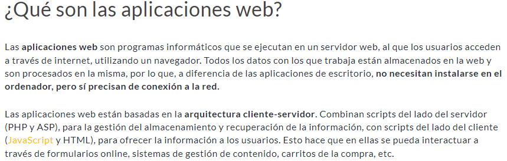
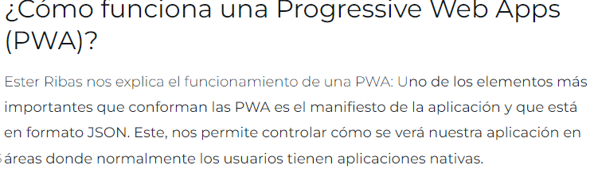
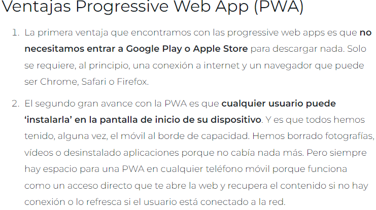

Aplicaciones web .
JS son documentos de texto que contienen líneas de código JavaScript. Estos códigos de JavaScript son referenciados por las páginas web cuando los espectadores implementar una acción en aquellas páginas web que requieren la implementación de funcionalidades que se han programado en las páginas Web a través de los códigos de JavaScript que se encuentran en los correspondientes .js archivos en el servidor Web. Estas funcionalidades pueden incluir automáticamente cerrar o abrir las ventanas del navegador Web o pestañas, mouseovers, secuencias de validación forma y así sucesivamente. Estos códigos de JavaScript también se pueden utilizar para crear cuadros desplegables con funcionalidades interactivas. Microsoft Bloc de notas se puede utilizar para abrir y ver el contenido de estos .js archivos.

El Service Workers es realmente importante ya que nos permite optimizar la retención de los usuarios. Hasta la fecha, esta funcionalidad solo la tenían las aplicaciones nativas, pero se ha convertido en una de las funcionalidades más importantes para poder mejorar el retorno del usuario a nuestra app. No obstante, con el aumento de notificaciones en todas las app, esta funcionalidad o característica cada vez queda más oculta.